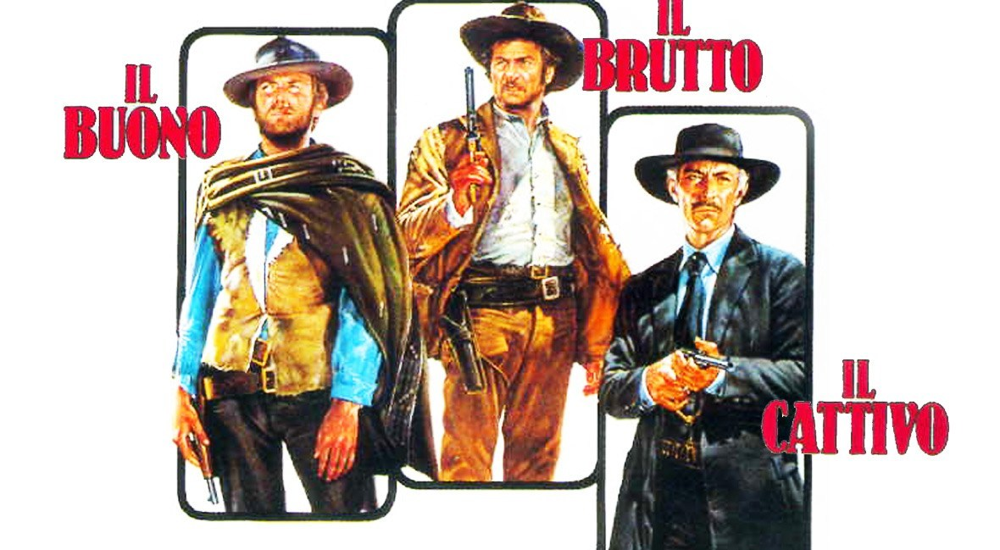

Eventi >
Rassegna Western >
Il buono, il brutto, il cattivo
Il Buono, il Brutto, il Cattivo
Il buono, il brutto, il cattivo è un film del 1966 diretto da Sergio Leone. Tra i più celebri western della storia del cinema, è considerato la quintessenza del fortunato genere spaghetti western

| Titolo: |
Il buono, il brutto, il cattivo |
| Tipo: |
Film |
| Genere: |
Western |
| Lingua: |
Italiano |
| Paese di produzione: |
Italia |
| Data: |
1966 |
| Formato: |
178 minuti |
| Regia: |
Sergio Leone |
| Sceneggiatura: |
Sergio Leone |
| Casa di produzione: |
PEA |
| Fotografia: |
Tonino De Colli |
| Montaggio: |
Eugenio Alabiso |
| Musiche: |
Ennio Morricone |